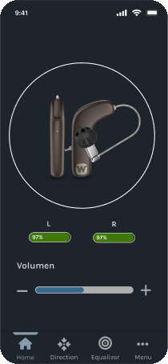
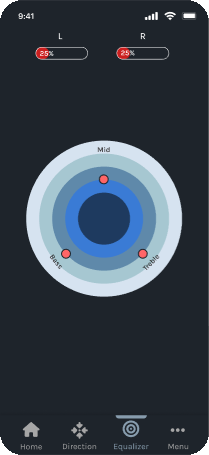
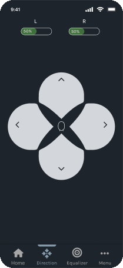
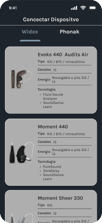
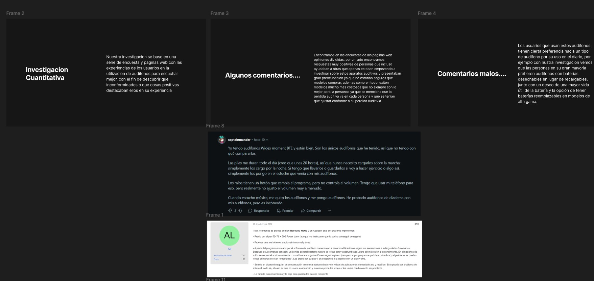
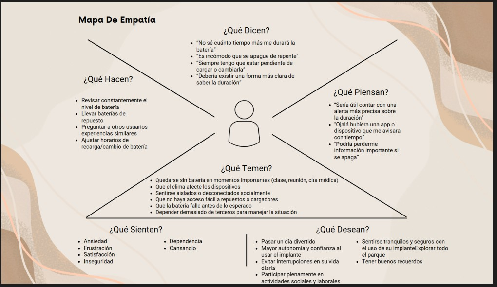
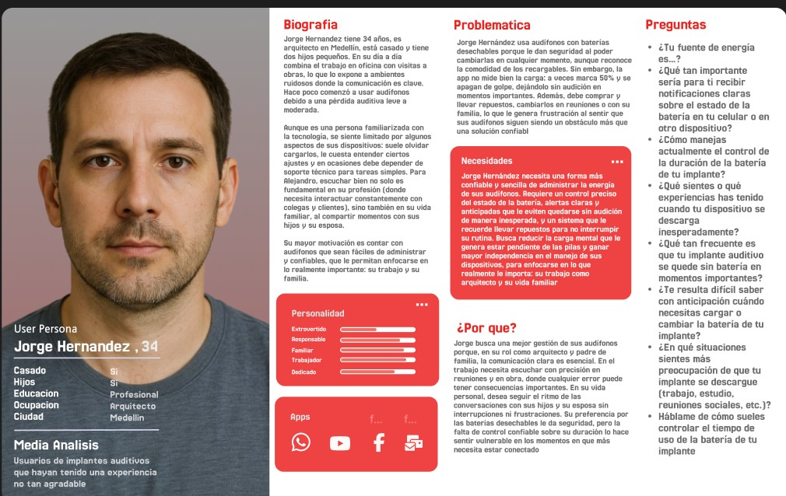
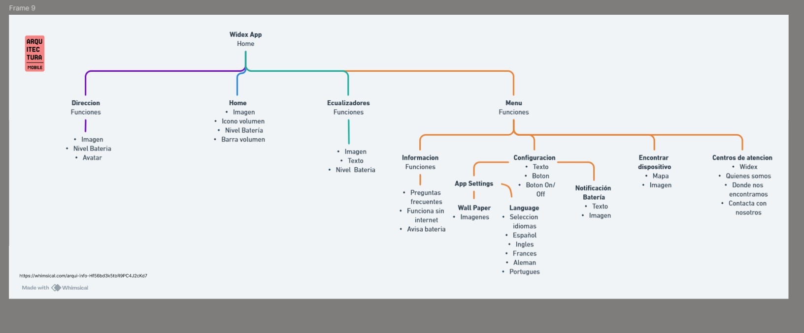
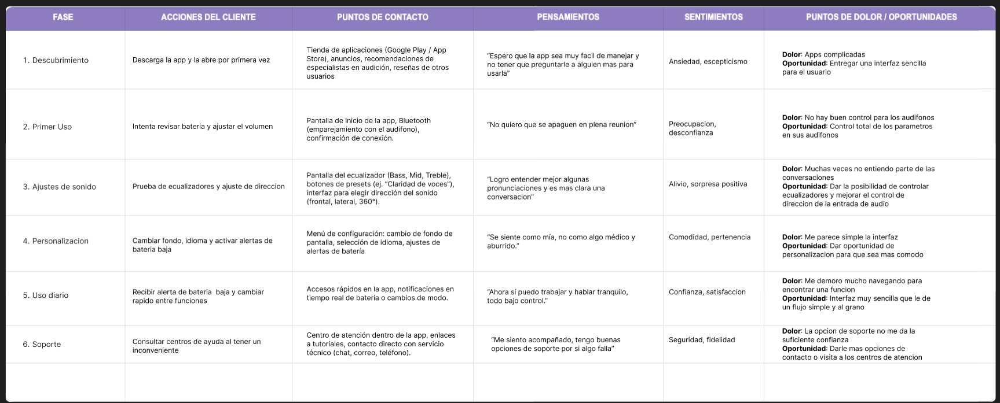
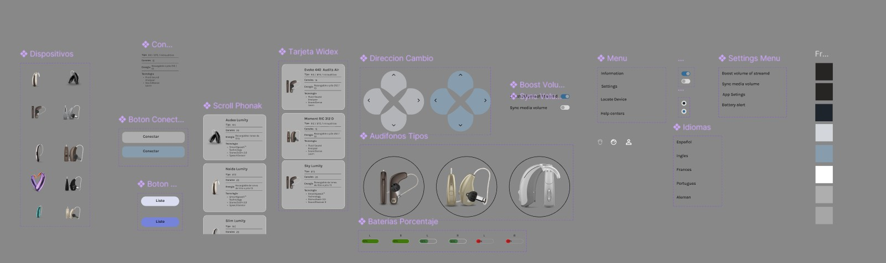

Caso 01 · App móvil · Accesibilidad
Que la batería nunca te sorprenda.
Una app para controlar audífonos y saber, con tiempo, cuánta batería queda: sin apagones en medio del trabajo, el estudio o una conversación.




¿Cómo saber con tiempo cuánto durará la batería?
Quienes usan dispositivos auditivos no saben con exactitud cuánto les durará la batería. Se apagan en medio del trabajo, el estudio o una conversación, y eso genera incomodidad y aislamiento.
Objetivo de diseño
Mostrar el estado de la batería de forma clara y anticipada, con alertas oportunas y controles simples para planificar la recarga o el cambio.
Escuchar antes de diseñar.
Partí de encuestas y foros en línea para entender cómo viven las personas sus dispositivos auditivos.
Opiniones divididas
Respuestas muy positivas, pero también preocupación por modelos costosos que no se ajustan a cada pérdida auditiva.
Lo que más molesta
La duración de la batería, los servicios profesionales y las limitaciones de la tecnología.
Lo que piden
Mejor conexión con el celular, voz más clara en ruido y más vida útil de la batería.

“No sé cuánto tiempo más me durará la batería.”
En el mapa de empatía aparece una y otra vez el miedo a quedarse sin audición en un momento importante: en clase, en una reunión o en una cita médica. Ese miedo guió todo el diseño.
De la persona a la pantalla.
Mapa de empatía
Resumí qué dicen, piensan, hacen y sienten los usuarios: ansiedad, frustración e inseguridad, y el deseo de autonomía y confianza.

User persona · Jorge Hernández
34 años, arquitecto, Medellín. Usa baterías desechables porque le dan seguridad, pero a veces marca 50 % y se apaga de golpe. Necesita control preciso de la batería, alertas claras y anticipadas, y un recordatorio para llevar repuestos.

Arquitectura de información
Cuatro áreas desde el home: Dirección, Home, Ecualizador y Menú. El nivel de batería está presente en las pantallas de control para que nunca se pierda de vista.

Journey map
Seis fases, del descubrimiento al soporte: descubrimiento, primer uso, ajustes de sonido, personalización, uso diario y soporte. En cada una, el punto de dolor se volvió una oportunidad de diseño.

Información clara. Control sencillo.
Una interfaz oscura y sin ruido que pone el estado de cada audífono en el centro.
Batería a la vista
Porcentaje del audífono izquierdo y derecho en la pantalla principal, con color según el nivel.
Controles amplios
Volumen y dirección del sonido con botones grandes y fáciles de tocar.
Ecualizador visual
Anillos concéntricos para graves, medios y agudos en lugar de deslizadores pequeños.
Fondo
Superficie
Acento
Controles
Texto

Probar con personas antes de entregar.
Conectar
Que el usuario conecte el dispositivo de manera satisfactoria, sin ayuda.
Ajustar el volumen
Que lo suba o lo baje rápidamente desde la primera pantalla.
Cambiar el idioma
Que encuentre y confirme el cambio de idioma del sistema.
¿Quieres ver el proceso completo?
Wireframes, pantallas en alta fidelidad, sistema de diseño y guion de pruebas, todo en un solo archivo.
Abrir el tablero en Figma ↗